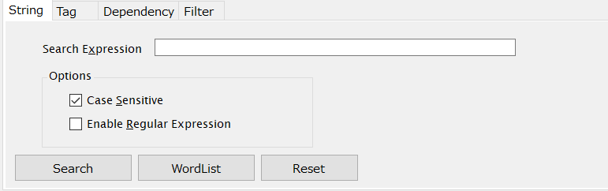
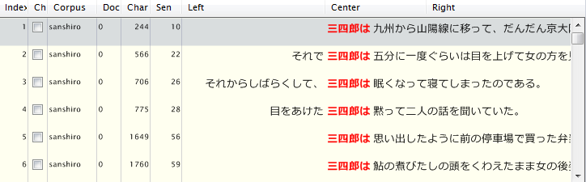
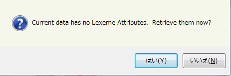
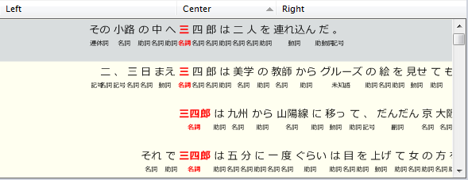

KWIC検索を行う：文字列(String)検索
ChaKi.NET liteは、複数のKWIC検索方法を提供しており、文字列検索(StringSearch)はその中で最も手軽にKWICを作成することのできる検索法になります。
コーパスを選択し終えた状態で、検索条件エリアのタブから"String"を選びます。

図に示すタブ内のエディットボックスSearch Expressionに、検索したい表現を入力します。 入力文字列においては単語区切りを意識する必要はありません。単純にドキュメントそのもの （表層文字列）の一部とマッチするような文字列を入力すれば、その生起箇所を中心として 文(*1)単位のKWICを作成します。
- Optionsの"Case Sensitive"は、大文字・小文字を区別するか否かを指定するスイッチです。英語等の 大文字・小文字を持つ言語においてのみ意味を持ちます。デフォルトはONです。
- 同"Enable Regular Expression"は、入力文字列を正規表現として解釈し、文単位で正規表現マッチング を行うようにするためのスイッチで、デフォルトではOFFです。 正規表現は.NET Framework正規表現に基づいており、Perlやawkで使用される一般的な文法を 使うことができます。（Perl 5の正規表現とほぼ互換性があると考えられます。） 参考リンク：https://learn.microsoft.com/ja-jp/dotnet/standard/base-types/regular-expressions
条件を入力し終えたら、パネル下部の"Search"ボタンを押して検索を開始します。
検索結果が取得されるに従い、結果表示領域(KWICビュー)が更新されていきます。進捗は結果表示領域上部に件数とパーセンテージで表示されます。なお、この領域をクリックするとさらに詳細な進捗（コーパスの語の総数（Nc, Nd）とヒッ数・パーセンテージ）を示すポップアップを表示させることもできます。 結果が100%取得できた時点で検索終了となります。結果取得の途中で結果表示領域上部の"Abort"ボタンを押して強制終了することも可能です。 下に正常に行われた検索の一例を示します。

- ChaKi.NETの検索ではどの検索法を使用する場合も、この条件設定の各タブにおいて検索条件を作成し、"Search"ボタンによって実行する流れとなります。
- 空文字列で"Search"を行うと、コーパスの全文を取得することができます（全文検索）。この時結果はKWICモードではなくテキストモードで表示されます。KWICモード()とテキストモード()はいつでも"View"のサブメニューまたはツールバーから切り替えられます。
- ChaKi.NETは、語のタグをベースとした検索ツールであり、語境界を意識しないこのような検索に 最適化されているとはいえません。Documentが巨大である場合、そのテキストすべてを メモリに読み込んで検索を行うことになり、場合によっては検索に失敗することがあります。 そのような場合はDocumentの分割を再考慮してください。
- ワード区切りのある英語のような言語でStringSearchを行うと結果にワード区切りが付きませんが、次節の語属性再取得機能を使って単語で区切った表示にすることができます。
語属性再取得機能
StringSearchは、語境界が事前にはっきりとわからない場合や、同じ文字列に対する語境界が一意に 割り振られているとは限らないような場合に、まずおおざっぱな検索を行うという一種「あいまい検索」のような 用途で使用することができます。例えば前の「三四郎」の例では、形態素解析において正しく「三四郎」 と解析されている場合と、「三/四/郎」と３語に分けられている場合があったとして、 StringSearch以外の語ベースの検索だけでは後者を発見することは困難を伴います。 このような場合に、語境界を意識しない検索であるStringSearchと、語属性を後から取得する機能である 語属性再取得機能とを組み合わせると効率的な検索が可能です。
StringSearchで結果取得した後、メニューの"View"-"View Attributes" またはツールバーのを押します。次のような確認メッセージが出ますので、

"はい/Yes"を押すとTagSearchレベルの語構造表示に切り替えることができます。 これを見ると、前述の誤解析部分が含まれていることを容易に知ることができます。

なお、"View Attributes"コマンドは本来KWICビューの「1行表示」と 属性を含む「2行表示」とを切り替えるものであり、ここでは、 1行表示を属性を含む２行表示へ切り替えようとしたところ、 語属性がKWICデータに含まれていないため語属性再取得機能が 内部的に動作した、というように理解していただければと思います。
- *1ここでの「文」とは、コーパス元データにおいてEOSで区切られた部分を指します。